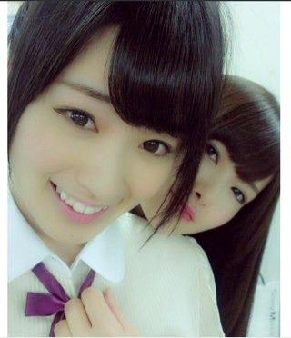
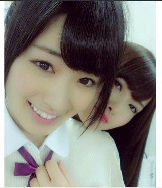

2012/0813Mon（´-`）.｡oO(かずみん×87
こんばんは(*^_^*)
いつも応援ありがとうございます！
今日はZEPPライブの初日でした！
メンバー全員で迎えることが
できなくて残念でしたが
沢山の方の前で披露できて
すごく嬉しかったです。
来てくださったみなさん、
ありがとうございました！
ずっと憧れてたステージ。
中3の終わり、アイドルに興味を持ち、
山口百恵さん、松田聖子さん、
中森明菜さんの歌唱力に惹かれ、
声楽を習い始めました。
高校生になって、
ハロプロさんのパフォーマンスに
感銘を受け、コンサートに
行くようになりました。
引き込まれるような
キラキラしたステージ。
いつからか私も
あのステージに立ちたいと
思うようになりました。
なかなかアイドルにはなれず
最後のチャンスで入ることができた
乃木坂46...
結成から1年弱が経ち
もうこんなに沢山のみなさんの前で
ライブをやることができて、
本当に嬉しかったです！
今日が始まりの日。
今までアイドルのライブを
沢山見てきた私は、
自分がまだまだだってことは
わかってます。
ステージに立ったら普段の私じゃなく
曲の世界と一体になった
アイドルの私になれるように。
これからもっと、もっと
上昇していけるように頑張ります！
明日は名古屋！
レッスンの成果が出せるように
ガジ頑張ります！！
-----
もうすぐ乃木坂も1周年を
迎えるのですが、
最近本当に
乃木坂46のメンバーになれて本当に
良かったなぁ。と思います。
とにかくみんな仲良くて、
優しくて...
この前も
まいやんが私の嫌いな蜘蛛を
退治してくれたり、
私が肌荒れで困ってると
言ったら、美雲ちゃんが
家から沢山のチョコラBBを
持って来てくれたり...
ななみんも肌にいい洗顔
フォームをくれて...
みんなありがとう(T_T)
私は生まれてからずっと
周りの人に恵まれてます。
優しい人ばかり...
今支えてくれてるファンのみなさんも
メンバーのみんなも
スタッフさんも
地元の友達も
家族も
みんなに感謝。
改めて最近思ったので書かせて
もらいました！
---
なんだかかたいブログになって
しまってごめんなさい(>_<)
とにかく、
悔いのない日々を送れるように
私も頑張りますので
これからもよろしくお願いします！

ポジティブSAY!
いつも応援ありがとうございます！
今日はZEPPライブの初日でした！
メンバー全員で迎えることが
できなくて残念でしたが
沢山の方の前で披露できて
すごく嬉しかったです。
来てくださったみなさん、
ありがとうございました！
ずっと憧れてたステージ。
中3の終わり、アイドルに興味を持ち、
山口百恵さん、松田聖子さん、
中森明菜さんの歌唱力に惹かれ、
声楽を習い始めました。
高校生になって、
ハロプロさんのパフォーマンスに
感銘を受け、コンサートに
行くようになりました。
引き込まれるような
キラキラしたステージ。
いつからか私も
あのステージに立ちたいと
思うようになりました。
なかなかアイドルにはなれず
最後のチャンスで入ることができた
乃木坂46...
結成から1年弱が経ち
もうこんなに沢山のみなさんの前で
ライブをやることができて、
本当に嬉しかったです！
今日が始まりの日。
今までアイドルのライブを
沢山見てきた私は、
自分がまだまだだってことは
わかってます。
ステージに立ったら普段の私じゃなく
曲の世界と一体になった
アイドルの私になれるように。
これからもっと、もっと
上昇していけるように頑張ります！
明日は名古屋！
レッスンの成果が出せるように
ガジ頑張ります！！
-----
もうすぐ乃木坂も1周年を
迎えるのですが、
最近本当に
乃木坂46のメンバーになれて本当に
良かったなぁ。と思います。
とにかくみんな仲良くて、
優しくて...
この前も
まいやんが私の嫌いな蜘蛛を
退治してくれたり、
私が肌荒れで困ってると
言ったら、美雲ちゃんが
家から沢山のチョコラBBを
持って来てくれたり...
ななみんも肌にいい洗顔
フォームをくれて...
みんなありがとう(T_T)
私は生まれてからずっと
周りの人に恵まれてます。
優しい人ばかり...
今支えてくれてるファンのみなさんも
メンバーのみんなも
スタッフさんも
地元の友達も
家族も
みんなに感謝。
改めて最近思ったので書かせて
もらいました！
---
なんだかかたいブログになって
しまってごめんなさい(>_<)
とにかく、
悔いのない日々を送れるように
私も頑張りますので
これからもよろしくお願いします！

ポジティブSAY!
2012/08/13 22:54
コメント(457)
とてもいいライブでした
次を楽しみにしてます
次を楽しみにしてます
一番前で今日は見たよ！！
楽しかったぜぜぜぜえっ！！
ありがとう！
楽しかったぜぜぜぜえっ！！
ありがとう！
一実さん、お疲れさま
ライブ最高やった！
乃木坂の初ライブに行けて幸せやわー。
一実さん、しっかりみえとったよ。
明日は行けんけど、頑張ってね。
かずみんっ♪
きょうは１日お疲れさまですヾ(･･｡)
初ライブ見に行けなくて
お家でうずうずしてたけども
無事成功できたみたいで
とっても嬉しいですっヾ(*´ω`*)ﾉ
これからもがんばってください！
ライブお疲れっ！！
今日は、行けなかったけど・・・・
東京で、やるよね？てか、是非やって下さい！
感謝の気持ち、受け取ったゼィ
明日も、ガンバっ
ポジティブ(^｡^)
LIVEお疲れ様でした。
これから名古屋と大阪以外でも出来るように頑張ってね！
しかし今日のLIVEはサイリウム投げたりする人がいたらしいね！非常に残念だと思った。
LIVEお疲れ様でした。
これから名古屋と大阪以外でも出来るように頑張ってね！
しかし今日のLIVEはサイリウム投げたりする人がいたらしいね！非常に残念だと思った。
お疲れ！
明日もガジ頑張れp(^-^)q
初コメします♪
こんばんはρ( ^ｏ^)b_♪♪
お疲れ様です(*≧∀≦*)
ライブ見に行きました♪
めっちゃよかったです(*≧∀≦*)
初めて生の乃木坂(T^T)
感動です(//∇//)
これからも応援しちゃいます♪
こんばんはρ( ^ｏ^)b_♪♪
お疲れ様です(*≧∀≦*)
ライブ見に行きました♪
めっちゃよかったです(*≧∀≦*)
初めて生の乃木坂(T^T)
感動です(//∇//)
これからも応援しちゃいます♪
ZEPPライブお疲れさま！！！
行きたかった～
初ライブは成功したみたいだね！！
明日もがんばれ！！
ふぁいてぃん！！！
やっほー
いわしだよー
かずみんまずはライブお疲れ様！
今日も明日も行けないけど応援してるから頑張ってね
かずみんはホントにいい人だね＼(☆o☆)／
じゃあね
いわし
今日見にいったで！
かずみん最高！
ほんとに楽しい時間をすごせました(・∀・)
これからも乃木坂上昇！
頑張ってな(・∀・)！
かずみん最高！
ほんとに楽しい時間をすごせました(・∀・)
これからも乃木坂上昇！
頑張ってな(・∀・)！
どーも！オレンジです！
ライブお疲れ様です(*^^*)
いやぁ、オーマイガー歌ったらしいじゃん(*_*)
俺乃木坂の前はNMBに行ってたからほんとに、あの曲好きなんだよね(*^^*)
あぁ、見たかった(ToT)
東京公演期待(>_<)
優しいメンバーに囲まれてよかったね(*^^*)
明日も頑張って＼(^o^)／
ポジティブSAY!
それじゃあこの辺で！
今日はお疲れ様(*^^*)
明日も頑張ろう
愛羅武勇
 オレンジ
オレンジ
ライブお疲れ様です(*^^*)
いやぁ、オーマイガー歌ったらしいじゃん(*_*)
俺乃木坂の前はNMBに行ってたからほんとに、あの曲好きなんだよね(*^^*)
あぁ、見たかった(ToT)
東京公演期待(>_<)
優しいメンバーに囲まれてよかったね(*^^*)
明日も頑張って＼(^o^)／
ポジティブSAY!
それじゃあこの辺で！
今日はお疲れ様(*^^*)
明日も頑張ろう
愛羅武勇
今日はお疲れさま（＾∇＾）
ちゃんと後ろの列から見てたよo(^▽^)oほんまに大阪LIVEしてくれてありがとう( ；´Д｀)
かずみんのパフォーマンスで元気になれしました
かずみんがいつか1人でLIVEするの楽しみにてます
ちゃんと後ろの列から見てたよo(^▽^)oほんまに大阪LIVEしてくれてありがとう( ；´Д｀)
かずみんのパフォーマンスで元気になれしました
かずみんがいつか1人でLIVEするの楽しみにてます
ガンバレーＯ(≧▽≦)Ｏ
ポジティブ SAY TOO！
ライブめっちゃ内容濃くて、めっちゃ良かったです！
本当に乃木坂に出会えて良かったと、帰り道でしみじみ思いました。
これからも応援します！
明日もがんばれー(>_<)
本当に乃木坂に出会えて良かったと、帰り道でしみじみ思いました。
これからも応援します！
明日もがんばれー(>_<)
こんばんは。
ライブ初日お疲れさま。明日も頑張ってください。
周りの人に恵まれるのは、その人自信が素敵な人だからだと思います。
周りへの感謝を忘れずに、そしてちょっとでも自分を褒めることも忘れずに、邁進してくださいね。
頑張ってかずみん。
ポジティブsay
ライブ初日お疲れさま。明日も頑張ってください。
周りの人に恵まれるのは、その人自信が素敵な人だからだと思います。
周りへの感謝を忘れずに、そしてちょっとでも自分を褒めることも忘れずに、邁進してくださいね。
頑張ってかずみん。
ポジティブsay
ポジティブ＼(^o^)／
今日は楽しすぎた！
害児湧きしすぎて声やばたんww
明日も１日頑張りまいやん(o^_^o)←
かずみさんのセクシーボイスにびっくりです！笑
さかちょん
お疲れ様でした。
最高のライブをありがとう！
疲れたと思いますけど、明日も頑張って下さいね
サーモン Say!
最高のライブをありがとう！
疲れたと思いますけど、明日も頑張って下さいね
サーモン Say!
かずみちゃん、初めてコメントします！
Zepp Liveお疲れ様(*´ω｀*)
今日は友達に誘われて行ったので
正直乃木坂のメンバーってあんまり
知らなかったんですが
今日のライブを見て、
かずみちゃんに一目惚れしました＼(^o^)／
歌ってるときの表情がすごく素敵で、
表現力に長けてるなーと思ったの＊
これから推していきます(*^_^*)
明日に備えてゆっくり休んでください♪
一実しかああああああああああっ！
いい忘れた。
今日のMIXのミニコント、あれ札幌で撮った？
いい忘れた。
今日のMIXのミニコント、あれ札幌で撮った？
お疲れ様&iF9C6;&iF99B;
今日のライブ最高やったで！
これからも応援していくぜぜぜぜーい＼(^o^)／
今日のライブ最高やったで！
これからも応援していくぜぜぜぜーい＼(^o^)／
初コメントです(*^_^*)
ライブ初日お疲れ様です！
いつか九州にも
来て下さーい＼(^o^)／笑
ライブ初日お疲れ様です！
いつか九州にも
来て下さーい＼(^o^)／笑
大阪ライブお疲れ様～＼(^o^)／
明日の名古屋行くよー(*´∀`)ノ
楽しみさぁー♪
ポジティブSAY!
明日の名古屋行くよー(*´∀`)ノ
楽しみさぁー♪
ポジティブSAY!
かずみん
ライブお疲れさま！
真剣に
考えてるね。
受けとめてるね。
大丈夫ですから！
地道に一歩ずつ
前に進みましょうぜ。
そう。
ポジティブに。
堅苦しいブログも
キライじゃない。
語れる時に
今のかずみんできてくれたら
それでいいんですよぉ！
会いたいな。
いつか必ず。
名古屋でのライブも
ガジ頑張ってね！
ライブお疲れさま！
真剣に
考えてるね。
受けとめてるね。
大丈夫ですから！
地道に一歩ずつ
前に進みましょうぜ。
そう。
ポジティブに。
堅苦しいブログも
キライじゃない。
語れる時に
今のかずみんできてくれたら
それでいいんですよぉ！
会いたいな。
いつか必ず。
名古屋でのライブも
ガジ頑張ってね！
かずみんこんばんわ～
ライブお疲れ様～
めっちゃ楽しかった！
マナー悪いのがちらほらおったのが残念やけど大成功やろw
セクシーサーモンやばかったし
ぐるカーの時はこっちが泣きそうなった
明日は名古屋
やまちゃんと行くしガジ頑張ー！
ほなねﾉｼ
ライブお疲れ様～
めっちゃ楽しかった！
マナー悪いのがちらほらおったのが残念やけど大成功やろw
セクシーサーモンやばかったし
ぐるカーの時はこっちが泣きそうなった
明日は名古屋
やまちゃんと行くしガジ頑張ー！
ほなねﾉｼ
ポジティブなかずみんが一番だよ
皆かずみんが大好きだからね
皆かずみんが大好きだからね
ライブに行きたかった…。休みが取れなくて行けませんでした…。
初の単独ライブなのに見届けられなくて、ごめんなさい！
今度、単独ライブをやる時は絶対に休みもらって行くからね！
ちなみに8月21日は僕の誕生日です！乃木坂46が生まれた日に僕が産まれました！
初の単独ライブなのに見届けられなくて、ごめんなさい！
今度、単独ライブをやる時は絶対に休みもらって行くからね！
ちなみに8月21日は僕の誕生日です！乃木坂46が生まれた日に僕が産まれました！
かずみんばんわ(*^o^*)
ヤングなでしこのやつ待機
なんか色々とあったみたいだね
でも初のLIVE楽しかったかな？
全員で立てなかったのはこっちも残念
見にいけなかったのも残念だけど
でも乃木坂は離れてても一つだよね‼
とりあえずお疲れ様＼(^o^)／
今日はしっかり休んでね？
LIVEで疲れてるだろうから
汗で風邪とか引くなよ～ww
でわでわこの辺で@(・●・)@
こんにちはかずみん（。・_・。）ノ
ひとまずライブおつかれさまでした
また明日も皆に感動を届けてね
今回はいけませんが応援しています。
やっぱりライブあるといつものかずみんと違う気がするね
ヤッパリって変だけど、テンションが高い感じがするよ

もっともっとライブを増やしてほしい
そんな日を楽しみに待ってます～
ひとまずライブおつかれさまでした
また明日も皆に感動を届けてね
今回はいけませんが応援しています。
やっぱりライブあるといつものかずみんと違う気がするね
ヤッパリって変だけど、テンションが高い感じがするよ
もっともっとライブを増やしてほしい
そんな日を楽しみに待ってます～
大阪ライブお疲れ様!!
もうすぐ結成一年だね！
去年の結成日、学校で受験勉強しながら
みんなでニュース見て知りました
メンバーが仲良いことテレビでもブログでも
伝わってきます
この一年間一実さんに本当に楽しませてもらったし、
とても元気もらいました
これからも大変だと思うけど自分の夢に
向かって頑張ってください
明日新幹線で名古屋Zepp行くよo(^▽^)o!!
また前の方で見れるから全力で応援します(^_^)ﾉ
今日はゆっくり休んで！
１日本当にお疲れ様ヾ(≧∇≦)♪♪
もうすぐ結成一年だね！
去年の結成日、学校で受験勉強しながら
みんなでニュース見て知りました
メンバーが仲良いことテレビでもブログでも
伝わってきます
この一年間一実さんに本当に楽しませてもらったし、
とても元気もらいました
これからも大変だと思うけど自分の夢に
向かって頑張ってください
明日新幹線で名古屋Zepp行くよo(^▽^)o!!
また前の方で見れるから全力で応援します(^_^)ﾉ
今日はゆっくり休んで！
１日本当にお疲れ様ヾ(≧∇≦)♪♪
ライブお疲れ様！！！
すごく楽しかったし充実した時間でした！(^^)
まさにメンバーとファンが一つになった感じがしました！
明日の名古屋もがんばってください！
すごく楽しかったし充実した時間でした！(^^)
まさにメンバーとファンが一つになった感じがしました！
明日の名古屋もがんばってください！
大阪ライブみにいったよ(*^^*)
けど、回りの人背がたかくってかずみんがあまりよく見れなかった(ToT)
ホント33人でれなくって悲しかった(;o;)
せっかくの乃木坂のちゃんとしたライブだったし(;´д｀)
乃木坂のメンバーいい人いっぱい
いていいね！
美雲ちゃん優しい！(笑)
それじゃ、明日もポジティブに頑張って(笑)
りなより！
ホントにお疲れ様！
ポジティブせいっっ！！
ポジティブせいっっ！！
かずみん、こんばんは。
今日はお疲れ様。
楽しかったかな？楽しかったでしょうね。
明日もうまくいくといいですね。
かずみんはガジ頑張ってますよ。
心配しないで、ポジティブSAY！
自分は明日も行けないけど、
練習の成果を存分に発揮してきてください。
そして、いつか東京でもかみずんを披露してくださいね。
では、今日はゆっくり休んでください。
今日はお疲れ様。
楽しかったかな？楽しかったでしょうね。
明日もうまくいくといいですね。
かずみんはガジ頑張ってますよ。
心配しないで、ポジティブSAY！
自分は明日も行けないけど、
練習の成果を存分に発揮してきてください。
そして、いつか東京でもかみずんを披露してくださいね。
では、今日はゆっくり休んでください。
おれはライブ、外れたから行けないけど、
明日もう一頑張りだね。
かずみん、ずっと応援しているよ。
明日もう一頑張りだね。
かずみん、ずっと応援しているよ。
かずみん、高山一実familyの皆様今晩わ。かずみん推しビギナーのピグレットです。
かずみん、ライブは思うパフォーマンスが出来たみたいですね～良かったね！
かずみんのキャラは乃木坂にフィットしてるよ。
明日は名古屋だね～今日に引き続きいいパフォーマンスが出来たら良いよね～ これからも沢山ライブやって皆が一緒に盛り上がれるように楽しもうね。
ポジティブsay！
かずみん、ライブは思うパフォーマンスが出来たみたいですね～良かったね！
かずみんのキャラは乃木坂にフィットしてるよ。
明日は名古屋だね～今日に引き続きいいパフォーマンスが出来たら良いよね～ これからも沢山ライブやって皆が一緒に盛り上がれるように楽しもうね。
ポジティブsay！
ライブおつかれ～♪
感謝の気持ちだいじたよね！
今日はいけなかったけど、お台場には行ける！！
楽しみに待ってるね！
感謝の気持ちだいじたよね！
今日はいけなかったけど、お台場には行ける！！
楽しみに待ってるね！
やっほ～♪(^з^)-☆
うちも中３の終わりから好きになった！
AKBから始まり
いろんなアイドルが好きになったよ☆ミ
乃木坂が出来て
公式ライバルって分かった時は
なんだか対抗してました(笑)
今思えば笑える話(^o^;)
それからかずみんとゆう
高山一実に出会うことが出来ました！
まだ会ったことないけど
今度必ず会いに行くから
待っとってね♪(^з^)-☆
好きやから！！！
大好きばい！！！！！
ポジティブポジティブ
ポジティブSay!(笑)
いず★みん
乃木坂初の単独ライブお疲れ様。東京から遠征して前から２列目で見てたけどわかった？超楽しかったよ。ＡＫＢのコンサートより何倍も何十倍も楽しかったよ。自己紹介でステージの端から端まで歩いたのも良かったよ。セカンドシングルの名古屋全国握手会でもやっていたよね。今日はしっかり休んで明日もファイト！
かずみん、お疲れ( *・ω・)ノ
今日のZeppライブめっちゃ楽しかったぁ（＾◇＾）(笑)ポジティブ!!めっちゃ距離近かった、ビックリ栗栗ブロッコリー(笑)
乃木坂46に感謝σ(*´∀｀*)
かずみん こんばんは( ´ ▽ ` )ﾉ
初ライブお疲れさまぁ！
行きたかったぁぁぁあ\(//∇//)\
初めてのライブ！
そしてちょっと早いけど結成1周年！
どっちもおめでとぉo(^▽^)o
1年間の乃木坂のがんばりが
ついに形になったね！
いつも かずみん の笑顔に元気もらってるし
そのお礼も込めて
いつか絶対見に行くけんね＼(^o^)／
これからも応援し続けるぜぜぜぜぜーい(((o(*ﾟ▽ﾟ*)o)))
明日も楽しんできてね！
一実さーん。
セイポジティブ☆
成功したんだね。
僕は明日のライブ行くからね。
ガジ楽しみにしてる、
今はまだ完璧じゃなくていいんだよ☆
明日は今の一実さんを見に行くね
セイポジティブ☆
成功したんだね。
僕は明日のライブ行くからね。
ガジ楽しみにしてる、
今はまだ完璧じゃなくていいんだよ☆
明日は今の一実さんを見に行くね
ライブには行けなかったけど
ずっと気になってたよ
自分もアイドルが好きで
よく以前はアイドルの曲
聞いてたけど
最近はだんだんアイドルの曲聞かなくなってけど
乃木坂の事を知って
応援するようになって
また、アイドルを聞くようになって
乃木坂がどう成長するか楽しみだよ
かずみんには、これからも期待してるよ
ずっと気になってたよ
自分もアイドルが好きで
よく以前はアイドルの曲
聞いてたけど
最近はだんだんアイドルの曲聞かなくなってけど
乃木坂の事を知って
応援するようになって
また、アイドルを聞くようになって
乃木坂がどう成長するか楽しみだよ
かずみんには、これからも期待してるよ
ライブお疲れ様!!
行きたかったけどさすがに大阪は遠い(>.<)
関東でやるときは絶対見に行くから近々よろしくね!!
一周年たつんだね!!
自分は最近好きになったんだけど、これから先もかずみんのことすきだぜ～(笑)
頑張れ!!!!
行きたかったけどさすがに大阪は遠い(>.<)
関東でやるときは絶対見に行くから近々よろしくね!!
一周年たつんだね!!
自分は最近好きになったんだけど、これから先もかずみんのことすきだぜ～(笑)
頑張れ!!!!
ライブ行ったよ＼(^ー^)／
ガジ楽しかったっす♪♪♪
みんなキラキラ輝いてて、自分のことみたいに感動しちゃいました(T^T)
みんなのパフォーマンスに勇気と感動、楽しさを頂きました！ほんまにありがとう(v^-゜)
ポジティブＳＡＹ！
ガジ楽しかったっす♪♪♪
みんなキラキラ輝いてて、自分のことみたいに感動しちゃいました(T^T)
みんなのパフォーマンスに勇気と感動、楽しさを頂きました！ほんまにありがとう(v^-゜)
ポジティブＳＡＹ！
名古屋のライブも頑張って。
行けなくても応援はしてるから！
乃木坂って良さそうだよね。居心地！
バイバイ
終わり！
行けなくても応援はしてるから！
乃木坂って良さそうだよね。居心地！
バイバイ
終わり！
ライブお疲れ様です。
子供からの夢・・・
叶って本当に良かったですね。
おめでとうございます！
明日も名古屋でライブですね。
頑張ってください！
子供からの夢・・・
叶って本当に良かったですね。
おめでとうございます！
明日も名古屋でライブですね。
頑張ってください！
かずみん、
明日名古屋行くから、
なんかーきらちゃんがー今日
かずみんに見られまくったとか
んもぅんもぅんもぅ
俺にもレスちょーだいねーww
じゃあまた明日、
ポジティブかずみん
ガジ頑張ってねー！
明日名古屋行くから、
なんかーきらちゃんがー今日
かずみんに見られまくったとか
んもぅんもぅんもぅ
俺にもレスちょーだいねーww
じゃあまた明日、
ポジティブかずみん
ガジ頑張ってねー！
＞この前も
まいやんが私の嫌いな蜘蛛を
退治してくれたり、
私が肌荒れで困ってると
言ったら、美雲ちゃんが
家から沢山のチョコラBBを
持って来てくれたり...
ななみんも肌にいい洗顔
フォームをくれて...
↑
これ、マジで言ってるんだろうけど、これだけで
笑ってしまったよＷ
まいやんが私の嫌いな蜘蛛を
退治してくれたり、
私が肌荒れで困ってると
言ったら、美雲ちゃんが
家から沢山のチョコラBBを
持って来てくれたり...
ななみんも肌にいい洗顔
フォームをくれて...
↑
これ、マジで言ってるんだろうけど、これだけで
笑ってしまったよＷ


今日のLIVE最高でした！
ありがとう＼(^o^)／